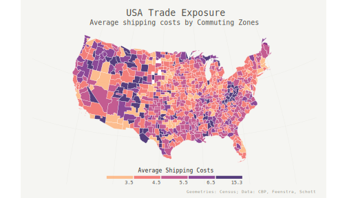

Import Competition and Household Debt (with Jean-Noël Barrot, Matthew Plosser, and Julien Sauvagnat) Submitted This version: July 2017; first version: Summer 2016
Abstract: We analyze the effect of import competition on household balance sheets from 2000 to 2007 using individual-level data on leverage and defaults. We exploit cross-regional variation in exposure to foreign import competition using industry level shipping costs and initial differences in regions' industry specialization. We confirm the adverse effect of import competition on local labor markets during this period (see Autor, Gordon and Hanson (2013)). We then show that household debt increased significantly in regions where manufacturing industries are more exposed to import competition. A one standard deviation increase in exposure to import competition explains 30% of the cross-regional variation in the growth in household leverage over the period. Our results highlight the distributive effects of globalization and their and their consequences for the mortgage market.
Download the paper

Best paper in Corporate Finance at the SFS Cavalcade Our post on VoxEU Our post in MarketWatch
Home